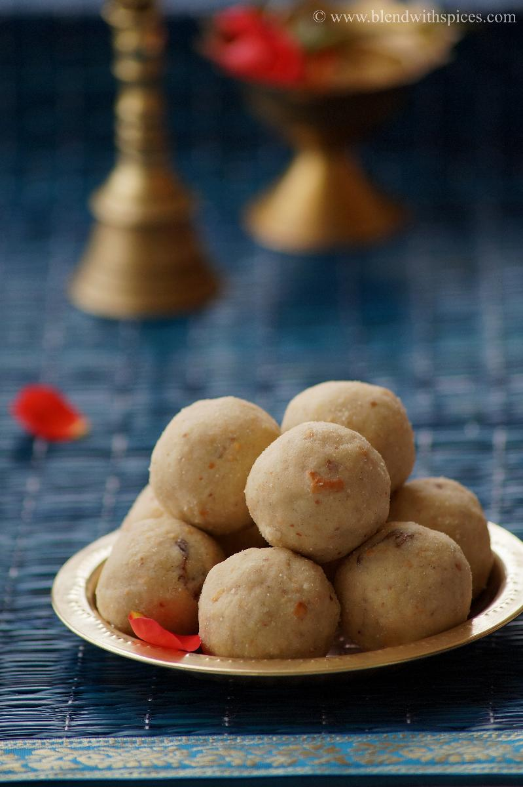

POHA LADOO

Description
POHA LADOOS are sweet balls that mostly consists of beaten rice either white or red. They are perfect candidate to be haven as an after meal Dessert
The sweet has cashew or raisin toping that adds beauty to the Dessert. please remember to have bottle of water while having the dessert as sometimes the dish might be very
rough to swallow. Otherwise I bet the best Dessert ever...
Ingredients
The ingredients of poha ladoo is:
- Beaten rice (White/Brown)
- Ghee
- Jaggery
- Cashew or Raisins
- Almonds
Steps
The detailed instructions on its preparation is:
- Take a Pan ,lit the Burner and Roast the beaten rice(White or brown or both) until they are crispy enough to be broken using fingers or Turn to light brown color.
- Lit the flame off.
- Add the roasted beaten rice into a mixer add the jaggery as per the sweetness required.
- Mix them very well using mixer until they are fine grained.
- Lit the burner on again.
- Take a new pan add Ghee and to it add raisins or cashew, and Almonds and fry until they are golden brown,lit off the flame.
- Add the Contents to a clean plate, add few spoons of ghee and pour the grinded mixture and the ghee fried cashew or almond ,raisins with them.
- Take a considerable amount of the content and start pressing them into balls
- Our sweet poha balls are made.